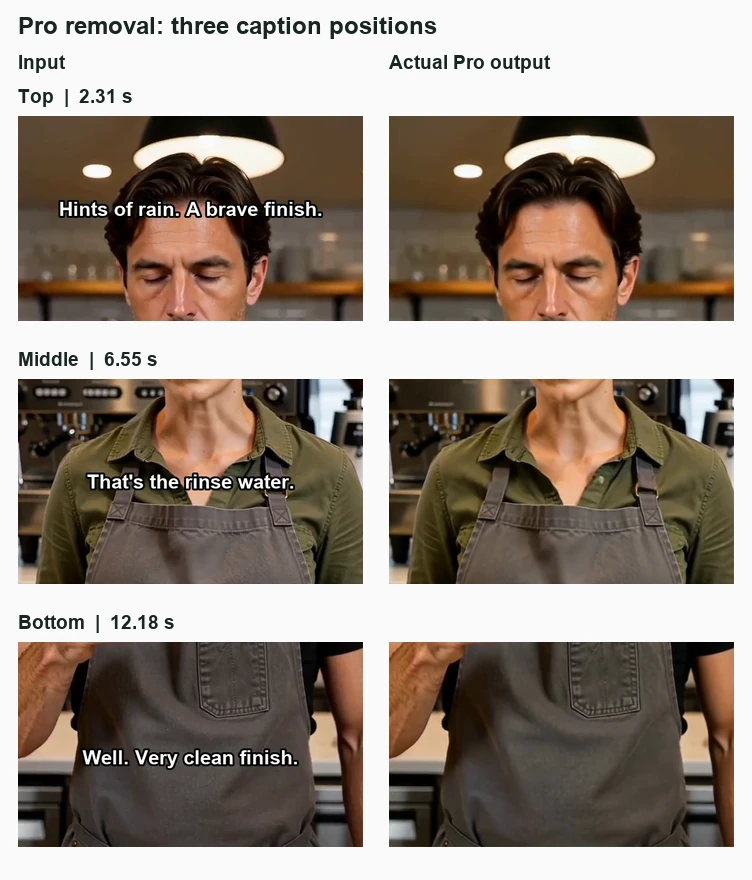

Remove burned-in subtitles
Clean the words baked into your footage before adding the next language. Pro searches the whole frame, including signs and prices. To keep those, select a region in Weydub.
Try your clip
Full-frame ProOpen the working media lab. Use the same receipt for a clip you already submitted.
Resume with a private receipt
Keep this code to retrieve your MP4 later. Anyone with the code can access the result.One clip, three caption positions
